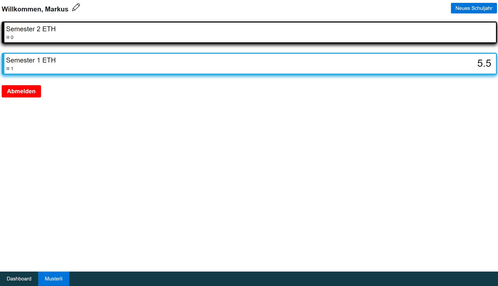
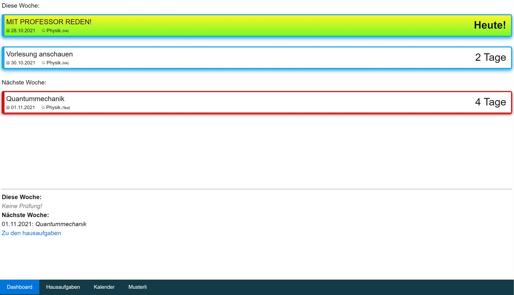
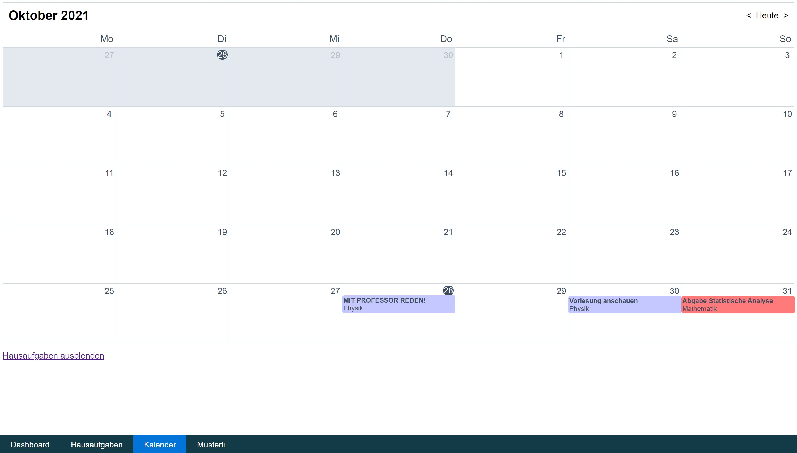

Um zu Starten kann man auf Neues Schuljahr klicken, sodass man zur Erstellungs-Page gelangt und das Schuljahr erstellen kann.
Das Dashboard (in der Leiste am unterem Rand) bietet eine Übersicht über was in den nächsten zwei Wochen geplant ist.
Von dort aus gelangt man auch zu den Hausaufgaben, wo man alle Hausaufgaben anzeigen lassen kann (auch bereits erledigte).
Man kann aber auch zum Kalender gehen, welcher eine Übersicht in Kalender-Form anzeigt (auch mit Hausaufgaben).
Züruck zur Schuljahr-Page, von dort kann man durch klicken auf das Schuljahr gelangen und die Fächer anzeigen lassen (oder eines erstellen) Man kann auch die Fächer anklicken, um die einzelnen Prüfungen anzusehen.
Falls man entweder User-Daten, Schuljahre, Fächer oder Prüfungen bearbeiten bzw. löschen will, muss man auf das  klicken.
klicken.
Die Webseite ist auch für das Smartphone einigermassen optimiert.